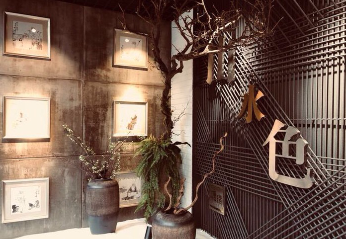
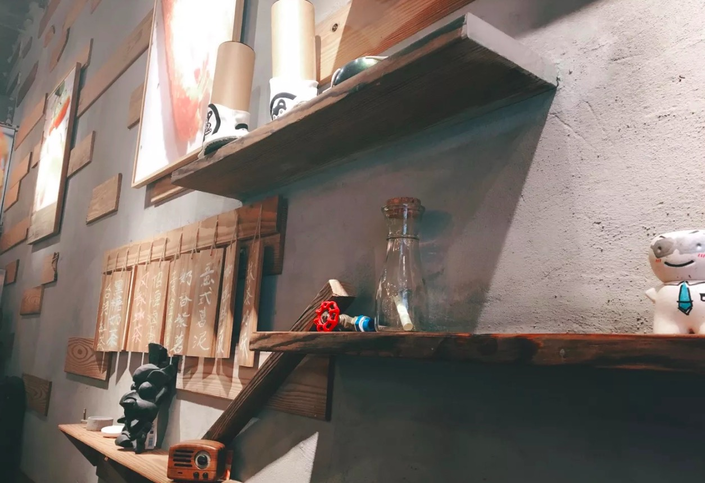

-
- 
-

私房菜
隐匿于城市之中，看烟火尽头，赏一方天际，间一林清净，不为名利，不为金钱，只为等待有缘人。给人一丝恰到好处的归属感。一个来了就不想走的地方。 -
- 
-

賽門太太
赛门太太与先生热衷台湾美食，对基隆三明治更是情有独钟。促使赛门夫妻毅然带着激情和梦想来到这里，也带来了台湾最正宗的美味。 -
泰國部落
隐匿着良多卧虎藏龙的美食，泰国部落，看似平常的平民小店，但阔伦大有来头、自带光环。店铺装修风格就自带泰国气息，他们家的原质料绝大局部原装进口，所有的调味品在泰国本土奏是顶级的食材，给顾客带来原汁原味的泰国体验。 -
洞庭火鍋
火锅来源于民间，升华于庙堂。无论是贩夫走卒、达官显宦、文人骚客、商贾农工，还是红男绿女、黄发垂髫，其消费群体涵盖之广泛、人均消费次数之大，都是他地望尘莫及的。作为一种美食，洞庭火锅已算得上是重庆美食的代表和城市名片。